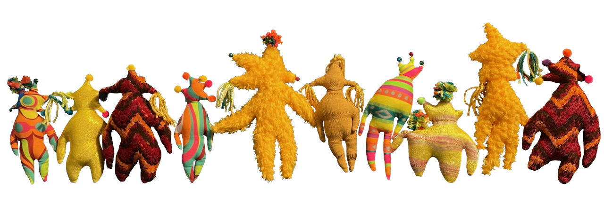
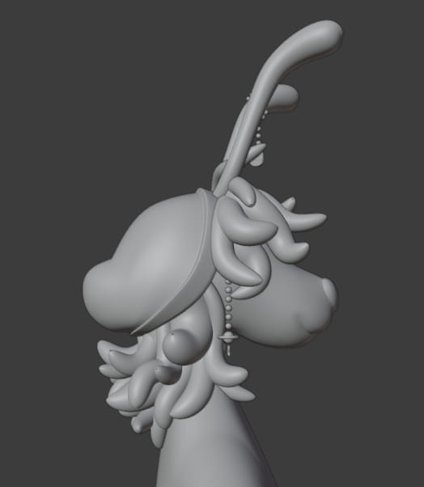

THE WEEZERS:
project date: November? 2021

i originally made these guys for my partner greg as a christmas prsent :0) they subsequently got featured on the tumblr radar and became probably my most popular creation at the time, which was scary. now they're my site's mascot! yay!
the weezers are not benevolent or kind creatures. they are more like a mixture between pikmin and lice than anything. they will infest anything you have and they'll eat anything like the nematodes did to sponchbob's house. some of them also had dog toy squeakers in them, which achieved the intended affect of scaring greg in the middle of the night when he rolls over on them. the shiny ones also shed these sharp plastic particles, which was not intentional but in character.


MORDIN (the plushie):
project date: Summer 2022
mordin is greg's oc who i love very much. this was a birthday present :0)
3d modelled, hand-sewn with hand-dyed fur and custom clothing! He is extremely ergonomic and lovely to hold, coming in at a whopping 40 cm long. His hands have magnets in them so he can hold his lovely wife (octavia), but unfortunately it didn't work out as good as i had hoped. that's alright, because they still love each other :0)
VELVET & WEEVIL V1:
project date: May 2023

velvet (pink) and weevil (blue) are self inserts me and greg made and then i decided i would go mad with power and make partial fursuits of. the fur was all hand dyed using a mix of alcohol, fabric softener, and alcohol ink and the heads were 3d printed and painted with uv reactive paint.
most of the work was done in two consecutive all-nighters since our goal was to get it done to go to momocon with, but we only finished at like 2pm that sunday so we got to the con with like 2 hours to walk around LMAO. we're proud of all our work and had fun but this project also birthed what we call "the quitter's pact"
VELVET & WEEVIL V2:
project date: March 2024 - Ongoing


i'm currently in the process of reworking the partials to add additional detail and polish. weevil has been furthest along, mainly because me and greg haven't been in person long enough for me to take good measurements. but also because i finished some more rework on it to have it ready for a local cosplay contest, which weevil won 4-day momo passes at! full circle, huh.
weevil's head is done though (resurfaced w drywall filler (bad choice) and repainted), and i finished a pair of custom pants. next are plans to customize the jacket more (which was thrifted + hand-dyed also!), make proper armor/chitin plating for the arms, add a tail and tiny wings, and possibly add fibre optics to the mane. this is an ongoing project.
velvet needs more done. her fur has been touched up and her snout repainted. i still need to put on her eyelashes, but i redid her eyes (as cool as the 1 way mirror compact eyes idea was, it was impossible to see out of).
i want to redo the fur on these SO BAD because i totally didn't realize how impossible it is to dye long-pile fur, the way they are now the dye rubs off on everything. however i think i am , as they say "in too deep" and i don't know whether i should redo it or not at this point. if i make the torsos though, i will at the very least buy new stuff and color match what i have.


CG V1:
project date: Feburary-April 2020
AHHH THE BEGINNING OF MY DECENT INTO MADNESS...
"cg" is my primary fursona and the first one i ever made basically. i had found out about "vtubing" (THIS WAS BEFORE IT WAS A WELL-KNOWN THING I PROMISE I WAS HERE BEFORE IT WAS "COOL") and really wanted my own model for transgender and furry reasons (basically the same thing). but also i was very fed up with all the same faced big boobed anime girls and wanted to make something unique. most importantly, i had no idea how to use blender.
for my first 3d model ever, cg v1 came out FANTASTIC. it did all work, but only if you didn't move certain ways or care too much about the eyes. i had a lot of problems with clipping and eye movement because of how i wanted to do the cartoon sphere eyes. i LOVE the style of them though so maybe one day i'll revisit it and figure out how to make it happen.
CG V2:
project date: Late 2021 - Spring 2022
CG v2 is when i really started to get experimental. do i like the direction i took the design in, in retrospect? not really. did i like it at the time? yeah! but it was also super necessary for what i was using it for- this was at the time when i started my mocap research project for school. the plan was to use CG as my avatar for it :0) i thought it'd be cool but it was also half an excuse to just be 3d modelling during school time. (i did also get the project done and did successfully build a mocap system, but i'd have to dig up the pics from that. it wasn't great quality cause it was all wireless and i didn't have a vr headset to base it around and my parent's wifi was and always will be forever shitty, but that's another story).
that said, once i hit the rigging process i had to stop and get a new computer, cause my 2018 surface pro wasn't cutting it. thankfully pacmanfever was born and she was able to handle cg2's verts. this was also when ARKit tracking was becoming accessible, so i got to tinker with that! it came out pretty good because cg2's face shape was sort of designed around it, but the lack of a definitive nose made it a little uncanny. you can watch a video here if you want to see it.


CG V3:
project date: ehhh???? 2022 - project limbo
CG MACH 3... NOW WE"RE TALKING
genuinely i'm very proud of this model. i understand a lot more about modelling now than i did when i started, and it's very cool to see how this design goes back to a lot of the original stuff i had. i experimented with a lot of new tricks i learned (SSS, chain generation, normal mapping which i still need to get the hang of) but unfortunately for some reason it's physically impossible for me to position this model now. i have no idea why, i know for a fact i could move it last time i worked on it however long ago, i just know i can't now. it's probably a sign i need to optimize the fuck out of this. it's technically done though! it'll run in vseeface with only minor lip syncing issues.
my one regret is making them so skinny, they look weird and rectangular from the side. i also regret the way i did the feet/legs because the rigging doesn't make sense, but i'll probably go back and revamp the model A FOURTH TIME just using this one as a base and not starting all the way over next time.
^ the original concept art from 2021

^ streaming assets... as if i'll ever have the guts to do that LOL
PROGRAM:
project date: July 2020

program is another one of greg's ocs, this was an attack for 2020 artfight! i like program a lot and this was my first attempt at low poly, so i think it came out pretty good!